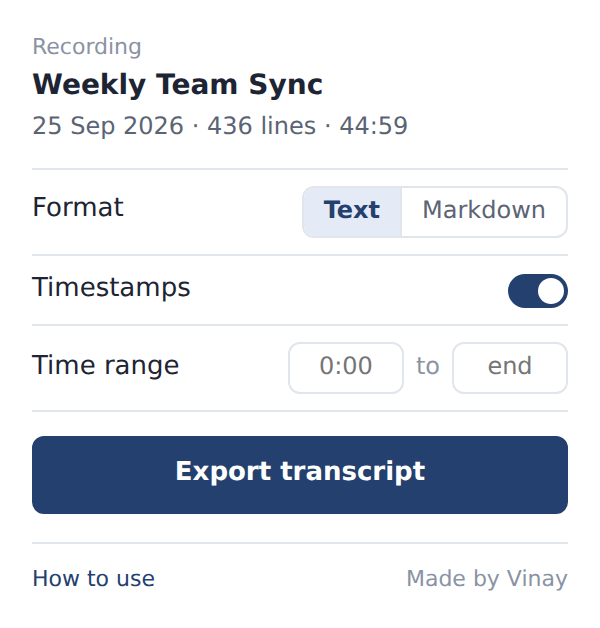
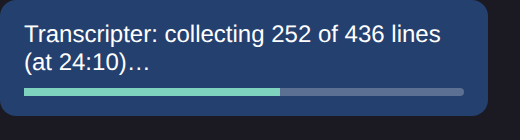
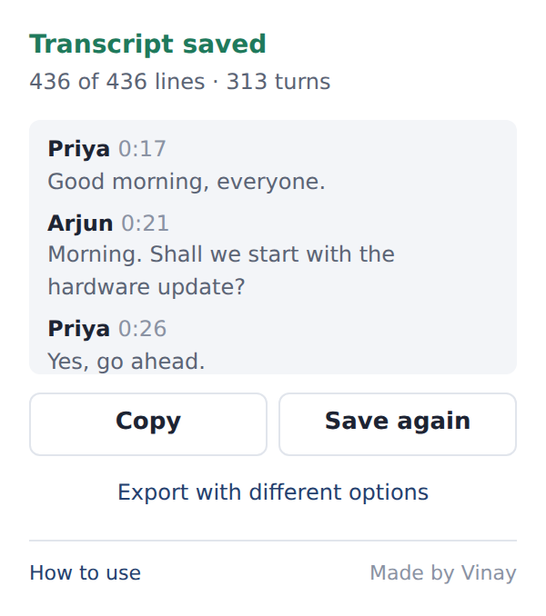

Transcripter saves the full transcript of a Teams meeting recording as a clean text file, with speakers and timestamps, in one click.
Open the extensions menu in your toolbar (a puzzle-piece icon in most browsers) and pin Transcripter. In Microsoft Edge, click the eye icon next to it instead. The VR icon will then stay in your toolbar.
Recordings open on a SharePoint page. If Teams opens it in the desktop app, use Open in browser. Make sure you're in the browser where Transcripter is installed.
Tip: press play for a moment and let the page finish loading before you export. Transcripter pauses the video for you.
Transcripter finds the meeting and shows its title, date, and number of lines. If the Transcript panel is closed, it opens it for you.

Text works everywhere; Markdown is handy for notes apps. Turn timestamps off for a cleaner read. Your choices are remembered.
Only need part of the meeting? Enter a Time range in mm:ss, such as 12:00 to 20:00. Leave either box empty to start from the beginning or run to the end.
The video pauses and the transcript scrolls by itself. A badge in the corner of the page shows progress. You can close the popup; the export keeps going. Need it sooner? Click Stop and save to download everything collected so far; the file is marked as partial.

It's named after the meeting and its date. Open the popup again to see a preview, copy the text, or save it once more.

Private by design. Transcripter runs only when you click it, only on SharePoint recording pages, and never sends the transcript anywhere. Everything happens in your browser.
Only what you can already see. It exports transcripts you have access to view. Follow your team's rules for sharing meeting content.
Copying to the clipboard. Windows clipboard history and sync can keep copied text. For sensitive meetings, use the downloaded file instead.
Click the VR icon, then How to use at the bottom of the popup.